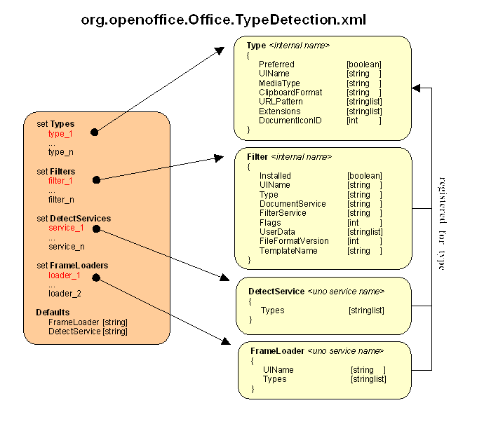

Type Detection
|
|
General
In version src619, the old
filter and type detection has been moved from "install.ini"
to the new configuration management. To do this, the information
was translated into XML format while the principle structure was
modified. Now you can use the complete process of the loading,
displaying or storing documents as a modular system. It functions
generically in many components and can easily be adapted to your
needs through the addition of your own modules or the removal of
others.
Note:
The processes described in the
following sections are still in the development phase and may be
subject to change. We will update this site in the event of
changes.
|
|
Configuration
The new
structure of the configuration is illustrated by the following
figure:

|
|
As shown on the left, the file consists of four lists (called
Sets) and two DEFAULT entries. The list items are described by
the structures shown on the right to which the arrows point.
|
|
|
Especially interesting is the possibility of registering
modules, suitable for a
type, which are capable of taking over various
tasks. The "Filters/",
"DetectServices" and "FrameLoaders"
lists were created for this
purpose.
|
What are
DetectServices?
Due to the registered types, flat detection is already
possible, i.e. the assignment of types (e.g. to a URL) only on
the basis of configuration data. If, however, you imagine
special cases (e.g. modifying the file extension of a Writer
file from .sdw to .doc), it quickly becomes clear that you
cannot always get a correct result with flat detection. To be
certain to get correct results, you need deep detection, i.e.
the file itself has to be examined. And that is exactly the
function of DetectServices. They get all the information
collected so far on a document and then decide which type to
assign it to. In the new modular model, such a detector is meant
as UNO service which registers itself in the Office and is
requested by the generic type detection if necessary. Therefore
you need two pieces of information:
The ServiceName -
This must be a valid UNO service name. It is also an entry in
the corresponding configuration list.
Example:
"com.company.devision.DetectService"
A list of Types able to be recognized
by this service - You can also implement and register detectors
for groups of types.
|
What are FrameLoaders?
FrameLoaders are also UNO services, but ones that are
supposed to "load" a detected type. A visual component
is expected as the result. The component can be
com.sun.star.awt.XWindow or, optionally, a view component
com.sun.star.frame.XController.
The UIName
permits a localized display in selection dialogs.
In this case as well, the list of Types
corresponds to the registration as possible loader for groups
of types.
|
What are Filters?
These objects also represent a service. Their function is to
import or export the contents of a type into a component.
Accordingly, import filters are differentiated from export
filters. The component must implement the
com.sun.star.lan.XComponent interface. Further interfaces are
determined by the respective document service. The use of a
filter usually comes from a loader.
The Installed
flag indicates the installation status of a filter. A filter is
generally registered equally for all users. But even in a
network installation you should be able to deactivate this for
certain groups or single users.
Even a filter should be able
to show a localized UIName in selection
dialogs.
A filter must register itself
for a Type that it
can edit. Multiple assignments are not possible.
The DocumentService
describes the component on which the filter operates. Depending
upon the use, this is seen either as output or goal of the
filter process. A UNO service name is expected.
The FilterService
is the real UNO service name of the filter implementation.
The Flags describe the sort of filter.
This is where, among other things, the organization into import
and export filters takes place.
Note:
External filters must set the ThirdParty flag in order to be
detected as such!
Supported flags are:
|
|
Import
|
0x00000001 h
|
|
|
Export
|
0x00000002 h
|
|
Template
|
0x00000004 h
|
|
Internal
|
0x00000008 h
|
|
TemplatePath
|
0x00000010 h
|
|
Own
|
0x00000020 h
|
|
Alien
|
0x00000040 h
|
|
UsesOptions
|
0x00000080 h
|
|
Default
|
0x00000100 h
|
|
NotInFileDialog
|
0x00001000 h
|
|
NotInChooser
|
0x00002000 h
|
|
Asynchron
|
0x00004000 h
|
|
Readonly
|
0x00010000 h
|
|
NotInstalled
|
0x00020000 h
|
|
ConsultService
|
0x00040000 h
|
|
ThirdParty
|
0x00080000 h
|
|
Packed
|
0x00100000 h
|
|
SilentExport
|
0x00200000 h
|
|
Preferred
|
0x10000000 h
|
Some filters need to be able
to store more configuration data than usual. This can be
realized with the UserData entry. The format
of the string list is not restricted in any way.
FileFormatVersion
indicates a certain version number of a document which can be
edited by this filter.
A TemplateName ...
|